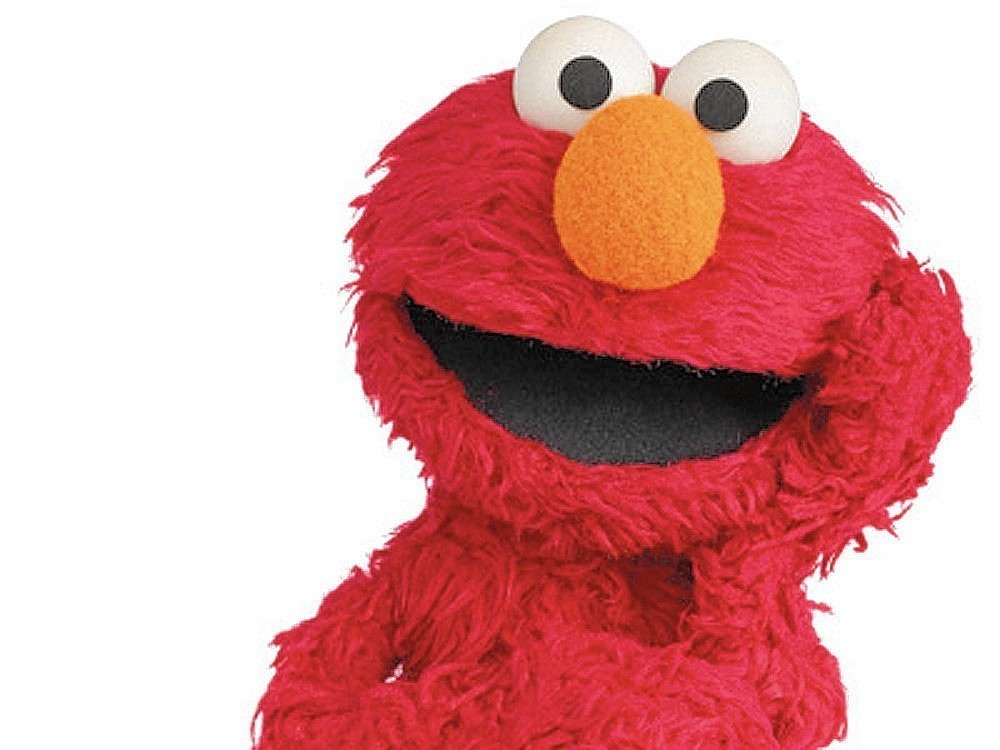

Elmo's World HomePage
Who Is Elmo?
Elmo is puppet on the children's show Sesame Street. He is a furry red monster who hosts the show "Elmo's World" for fifteen minutes at the end of each episode. Elmo often refers to himself in the third person. In Elmo's World, there is a question about a certain topic that Elmo spends the entire segment trying to answer and gather information about.
